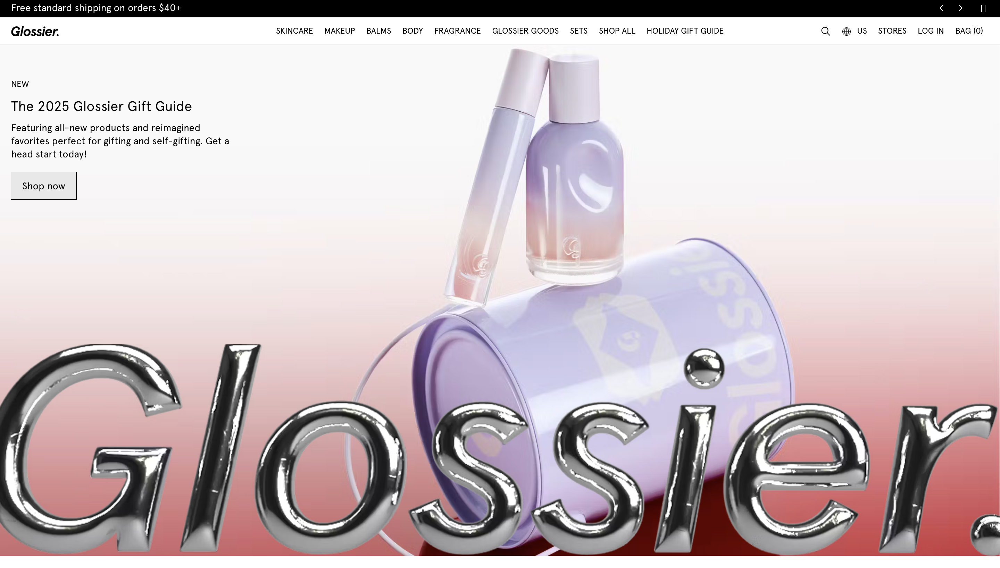
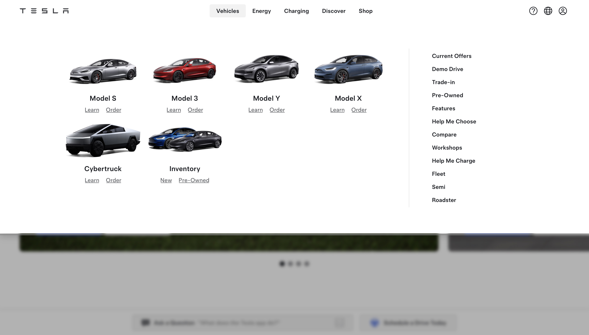

Color plays a powerful role in how users perceive a website and brand. Two companies that demonstrate this perfectly are Glossier and Tesla. Both brands use minimalist layouts and high-quality imagery, yet their color choices lead to entirely different emotional experiences. Glossier’s soft, pastel palette creates a calm and inviting feel, while Tesla’s sleek monochrome design communicates innovation and luxury.

Glossier’s website reflects the brand’s modern and youthful image through its use of soft pinks, creams, and white backgrounds. The design feels airy and approachable, with plenty of white space that highlights product images. The color palette supports Glossier’s identity as a brand focused on natural beauty and self-expression. Rather than overwhelming users, the gentle colors and minimal typography create a sense of calm and trust.

Tesla’s website takes a completely different approach. It uses black, white, and gray tones with bold photography of vehicles and technology. This stark contrast emphasizes precision, performance, and high-end sophistication. The lack of color works in Tesla’s favor — it allows the sleek car designs and red logo to stand out. The overall effect is modern, confident, and innovative.
Both Glossier and Tesla rely on minimalist layouts, but color is what sets their tones apart. Glossier’s soft hues make the brand feel warm and personal, appealing to emotion and self-care. esla’s grayscale tones create a bold and futuristic atmosphere, emphasizing innovation and status. The difference in color use shows how design choices can shape brand perception — even when layouts are simple.
Through color alone, Glossier and Tesla show that minimalism doesn’t mean uniformity. Glossier’s pastel design invites users in with warmth and approachability, while Tesla’s monochrome style commands attention through sleek sophistication. Both websites prove that color is not just decoration — it’s an essential tool for storytelling and brand identity.